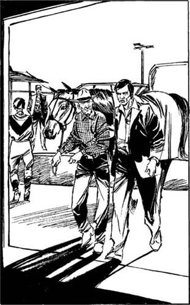

9
Listen to Part 1:

Cuộc đua
‘Nhanh hơn, Golden Dragon! Nhanh hơn! Nhanh hơn!’
Ai đó đang hét lên. Chính là tôi! Đám ngựa chạy vòng quanh đường đua. Chúng phi nước đại về phía chúng tôi. Margarita đang ở vị trí đầu tiên.
Nhưng Golden Dragon đang ở vị trí thứ hai! Lúc đầu, nó chạy khá chậm. Nhưng giờ thì nó chạy ngày càng nhanh hơn!
Đám ngựa phi nước đại ngang qua chúng tôi. Mọi người đều hò hét. Golden Dragon và Margarita đang chạy song song. Hai con ngựa cùng về đích cùng lúc. Con nào thắng cuộc đây? Chúng tôi chờ đợi trong khi các quan chức xem lại bức ảnh về đích.
‘Thật kinh ngạc!’ Herman nói. ‘Golden Dragon chạy nhanh thật. Nó chưa bao giờ chạy nhanh như vậy.’
Năm phút sau, có thông báo từ loa phóng thanh. ‘Kết quả chặng đua vừa rồi là, nhất – Golden Dragon và nhì – Margarita.’
Tôi nhảy cẫng lên và ôm lấy Herman.
‘Woa!’ Herman nói. ‘Bạn thắng bao nhiêu?’
‘Chờ tôi một lát,’ tôi nói. Tôi đi đến cửa sổ đặt cược. Tôi đưa cho người phụ nữ tờ giấy ghi chi tiết về số tiền cược của mình. Cô ấy đưa tiền cho tôi. Golden Dragon đã về nhất với tỉ lệ cược 50-1. Và tôi đã thắng 1000 đô!
Listen to Part 2:
Tôi đưa Herman 850 đô. Sau đó, tôi tạm biệt anh ấy.
Tôi nhìn lại khán đài. Gates và bạn anh ta đâu rồi? Họ không ngồi trên ghế nữa. Họ đã rời đi sau khi Golden Dragon chạy đua chưa? Có lẽ họ cũng cược vào Golden Dragon! Nhưng họ đã không rời chỗ ngồi trước khi cuộc đua bắt đầu. Tôi nhớ đến người đàn ông tóc đen và chiếc điện thoại di động. Có lẽ họ đã đặt cược qua điện thoại. Vâng! Đó chính là câu trả lời.
Nhưng còn nhiều câu hỏi nữa. Hai người đàn ông này quen biết Sandy. Họ đã đánh cắp The Chief. Và Sandy đã nói với tôi cái tên của Golden Dragon. Chuyện gì đang xảy ra vậy?
Tôi bỏ đi khỏi đường đua. Tôi tháo mũ và kính râm ra. Tôi đi về phía khu vực chuồng ngựa. Có hai nhân viên bảo vệ và một số nhân viên của trường đua đứng ở cổng vào khu vực chuồng ngựa. Slim không có ở đó.
Tôi quan sát lối vào. Hai nhân viên bảo vệ kiểm tra mọi chiếc xe ở lối vào. Họ kiểm tra giấy tờ tùy thân của người lái xe. Nếu có xe kéo, một nhân viên sẽ kiểm tra giấy tờ tùy thân của con ngựa.
Tôi đeo thẻ bảo vệ màu xanh quanh cổ và tiến đến cổng. Tôi vẫy tay chào các nhân viên bảo vệ và mỉm cười. Sau đó, tôi đi qua cổng vào khu vực chuồng ngựa.
Khu vực này rất đông đúc. Xe cộ, xe kéo và ngựa ở khắp mọi nơi. Các nài ngựa mặc quần áo nhiều màu sắc đang nói chuyện với các huấn luyện viên. Tôi từ từ đi về phía chuồng số 14.
Tôi dừng lại cách chuồng ngựa lớn đó khoảng năm mươi mét. Tôi đội mũ, đeo kính râm trở lại và đứng gần một số cây. Chiếc xe 4x4 màu đỏ và xe kéo được đỗ bên ngoài chuồng số 14. Tôi không thấy có con ngựa nào trong xe kéo. Tôi đứng đợi. Sau đó, một người mà tôi quen biết đi về phía chuồng số 14. Đó là Lou Weaver! Tôi nhìn vào mặt anh ta. Anh ta có vẻ rất vui mừng về điều gì đó. Nhưng anh ta cũng rất lo lắng về một điều gì đó. Anh ta đứng bên ngoài chuồng ngựa.
Vài phút sau, một nài ngựa đi về phía chuồng số 14 với một con ngựa nâu lớn. Người nài ngựa mặc một chiếc áo sơ mi màu đen và vàng. Lou nói chuyện với người nài ngựa và lấy con ngựa từ tay anh ta. Tôi biết con ngựa đó. Đó là con ngựa chiến thắng trong cuộc đua vừa rồi – Golden Dragon!
Tôi không hiểu. Nếu Golden Dragon là ngựa của Sandy Bonner, tại sao cô ấy không nói với tôi điều này?
Listen to Part 3:
Sau đó, một người đàn ông bước ra khỏi chuồng ngựa. Đó là người đàn ông cao lớn, tóc đen. Anh ta nắm lấy cánh tay Lou và họ cùng đi vào chuồng ngựa với con ngựa. Cánh cửa đóng lại.
Mười phút trôi qua. Sau đó, người đàn ông tóc đen xuất hiện trở lại. Anh ta mở cả hai cánh cửa chuồng và lùi chiếc xe đỏ cùng xe kéo vào chuồng. Anh ta đóng cửa chuồng lại. Tôi đợi.
Sau thêm năm phút nữa, cánh cửa lại mở ra và chiếc xe 4x4 cùng xe kéo đi ra. Người đàn ông tóc đen ngồi trên xe. Anh ta dừng xe trước chuồng ngựa, ra khỏi xe và quay trở lại tòa nhà.
Tôi từ từ đi về phía chiếc xe và xe kéo. Bây giờ đã có một con ngựa trong xe kéo. ‘Đó là Golden Dragon,’ tôi nghĩ. ‘Nó đang về nhà sau cuộc đua.’
Tôi quay trở lại về phía cổng. Tôi ngồi xuống đất dưới một cái cây. Tôi nảy ra một ý tưởng. Tôi sẽ đợi cho đến khi chiếc xe đỏ và xe kéo rời khỏi trường đua. Sau đó, tôi sẽ quay lại chuồng số 14 lần nữa.
Tôi có rất nhiều câu hỏi và tôi muốn có câu trả lời. Tôi đã bị đánh vào đầu và bị trói bằng dây thừng bên ngoài chuồng ngựa này. Tại sao chuyện đó lại xảy ra? Hai người đàn ông này đang làm gì? Tại sao Lou Weaver lại ở đây? Sandy có biết về chuyện này không?
Tôi ngồi đợi. Mười phút sau, chiếc xe 4x4 đỏ và xe kéo đi ngang qua tôi và dừng lại ở cổng. Bây giờ có hai người trên xe. Một người là đàn ông tóc đen. Tôi không nhìn rõ người kia. Liệu đó có phải là Dick Gates không? Hay là Lou Weaver?

Người đàn ông cao lớn, tóc đen nắm lấy cánh tay Lou và họ cùng đi vào chuồng số 14.
Chiếc xe và con ngựa đã được kiểm tra. Sau đó, chiếc xe 4x4 đi qua cổng và rời khỏi trường đua.
Listen to Part 4:
Hôm nay, tôi sẽ cẩn thận. Tôi đợi trong một giờ. Chiếc xe 4x4 không quay lại. Khu vực chuồng ngựa không còn đông đúc như trước. Và mặt trời không còn quá chói chang.
Tôi lấy chìa khóa đặc biệt ra khỏi túi và mở cửa chuồng số 14. Ngay sau đó, tôi vào bên trong tòa nhà và đóng cửa lại.
Bên trong chuồng ngựa khá tối. Tôi đặt tay phải lên tường. Liệu ở đây có công tắc đèn không? Tôi di chuyển tay dọc theo bức tường. Không có gì cả! Tôi từ từ bước về phía trước, tay vẫn đặt trên tường.
Cuối cùng, tôi cũng tìm thấy công tắc đèn. Nó ở trong góc. Tôi chạm vào công tắc. Nhưng không có đèn nào sáng lên.
Tôi định đi về phía cửa. Tôi sẽ mở hé cửa một chút. Tôi muốn có thêm chút ánh sáng vào bên trong chuồng ngựa. Nhưng tôi đã không di chuyển. Tôi nghe thấy một thứ gì đó. Đó là tiếng động cơ điện. Tôi lấy khẩu súng ra khỏi túi.
Một điều rất kỳ lạ đang xảy ra. Ánh sáng đang vào trong chuồng ngựa tối om. Nhưng nó không đến từ bên ngoài. Nó đến từ bức tường bên phải. Sau vài giây, tôi có thể nhìn rõ mọi thứ. Chiếc tủ lớn đang từ từ di chuyển! Có một cánh cửa trên bức tường đằng sau chiếc tủ. Chiếc tủ được đóng vào cánh cửa. Công tắc mà tôi vừa chạm vào đã khởi động một động cơ điện. Và động cơ điện đang mở cánh cửa bí mật này. Vâng! Ánh sáng đến từ phía sau cánh cửa!